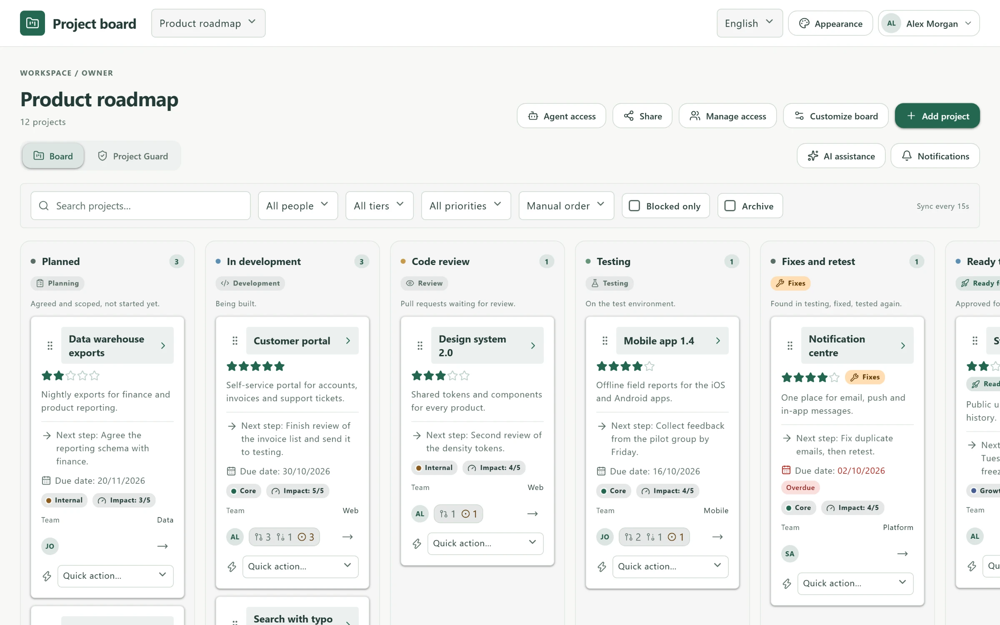

01 · Board
Your workflow, your columns
Columns follow the way your team works. Each maps to one of ten stages, such as planning, review, fixes, retest or production, so the board knows what each column means.
- Drag and drop with the pointer, or move and reorder from the keyboard
- Search, and filter by person, tier, priority or blocked state
- Order by hand or by priority; work-in-progress limits warn without blocking
- Each person picks which details cards show: next step, dates, GitHub, fields

